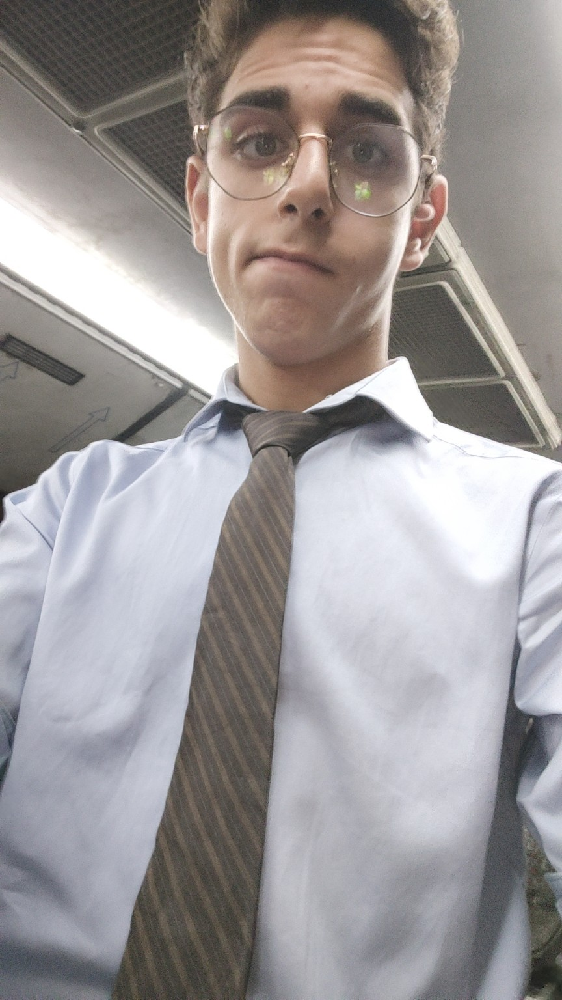
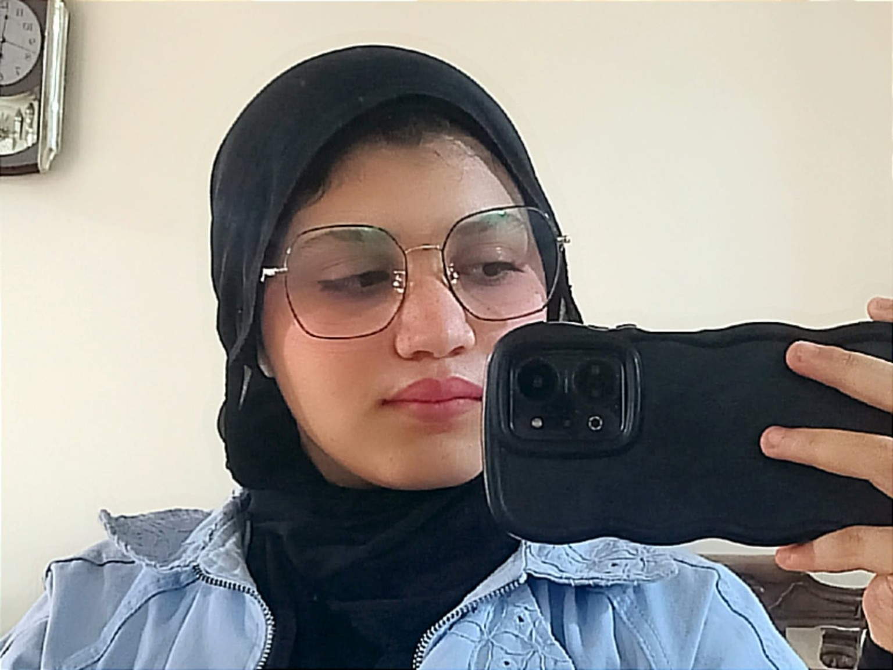

STUDENT RESEARCHER
Ammar Ahmed Adel
Project role: computational development, website engineering, AI workflow design and technical documentation.
Geno-Eye is a student research project built through collaboration, curiosity and evidence-based investigation.

Project role: computational development, website engineering, AI workflow design and technical documentation.

Project role: scientific literature review, research development, documentation and presentation.
To investigate a challenging scientific question with transparent methods, responsible use of data and clear communication of what the evidence can—and cannot—show.